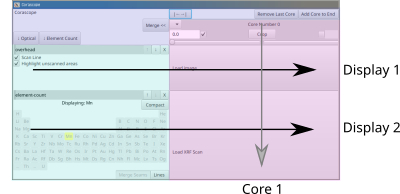
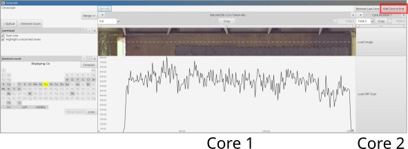

Corascope: Manual
Table of Contents
 Project Goals
Project Goals
- ITRAX core scan inspection
- to find scanning issues and identify regions of interest
- Crop ITRAX Cores scans
- to remove extraneous data, overscans and regions of bad data
- Merge ITRAX Core scans
- to glue back long core sections that needed to be scanned in sections so that you can go back to reasoning about core depth positions
- Maintaining ITRAX format
- All input and output should conform to the ITRAX formats so that data that has been cropped and merged is in the familiar format on output
 Program layout
Program layout
On program launch we are presented with a minimal layout

The screen is split into several areas:
- a top area with a few global options
- a menu area on the side which has different toggles and buttons
- a core layout area with an empty core with Load buttons.
We can already see the two principle modular visual elements that will be at the center of our workflow
Displays
Horizontally we have a list of different displays with their correspinding menus on the side.
On launch we are already presented with two displays: Overhead and Element Count. Each row has a display area and a separate margin with the display's name, display-specific options and buttons for rearranging/removing displays. When data is unavailable the display either displays an error or reverts to a "Load" button - prompting the user to load in the necessary file.
Displays are simply ways of visualizing core data! They are not tied to any information of their own. You can always delete and recreate them without any loss of information
Cores
By contrast, the actual data is stored in cores. These are organized along vertical columns in the core layout area which you can navigate around using your mouse - scroll to zoom and drag to pan. The button at top will help you recenter/zoom-to-fit the cores. The core layout area is organized from left to right, from shallow to deep.
ITRAX optical scans are right-to-left. The program expects scans this ITRAX format and will output in the ITRAX format, even though they are displayed horizontally flipped within the program itself b/c this is the more canonical and visually intuitive ordering
On program launch the layout shows just one empty core. As we load more cores into the program the vertical arrangement will become more apparant. Each vertical colum corresponds logically to one core and its associated data.
At the top of each row is the core name, menu and [X] Delete button - the row below that the core start and end points (in mm) and has additional options for cropping the core.
- The core name is derived from the XRF file name
- The start/end points and cropping will discussed in the next section
When you drag/load data into a display area the data is being loading into the corresponding column's core and when that core is removed its associated data is permanently removed (so be careful!). The data will be things like: XRF scans, optical scans, XRay scans, associated depth/positions etc. At upper left corner of each core column you will find a drop down menu that allows you to load these different files of data.
Once data is loaded you can add additional cores by clicking "Add Core" in the upper right corner. This will add an empty core column right after the end of the last core

 Adjusting Cores
Adjusting Cores
Once all core data has been loading into the program, they need to be adjusted and layed out. There are two mechanisms for this and you should use them in whatever order makes sense for your situation
Core Position
To go from an XRF scan to actual usuable depth values we need to be able to fine-tune the core position. Corascope supports a flexible system for adjusting the position that should cover most usecases.
Note that the core's length is an inherant property of the core data. It's either based on the length of the optical scan or XRF data (the final position mm in the XRF scan file). It can only be modified through cropping
This places a hard constraint on how the position can be adjusted
On the right and left of the core header there are two boxes indicating the start and end of the core. By clicking the check box adjacent to the value you want to modify you can change it to whatever value you require
B/c the core length is fixed you naturally can only modify one of these values. The check boxes further serve to pin the core position to that value
Cropping
Below the position values at the very bottom of the core header you will always see two sliders which allow you to select the tail ends you would like to crop off. The open displays will provide visual feedback for what is being selected to crop. Once you've made your selection you can hit the Crop button and the ends will be cropped off all of the cores data
Note:
- When running the ITRAX machine you will first run an optical scan and then select a subregion to run the XRF scan. This typically means there will be regions/pixels on either end that are visible on the optical scan but have no XRF data associated with them. If you right click on
Cropyou can autoselect there areas to be cropped.- The sliders are limited to cropping off at most 50% - so if you have an very unusual scan where one tail is >50% then you may simply need to crop multiple times
- If there is an optical scan loaded into a core column, then the cropping will snap to the nearest pixel boundary. This ensures that if there is XRF data loaded then cropping will never make the data drift and that the optical and XRF data remain aligned with respect to each other.
Project non-goals …
Core inspection and processing is an endess field of possibilities limited only by the user imagination. I hope this software helps you gain insight into the data you've gathered and provides some inspiration for what to look into further. That said, to maintain everyone's sanity as well as constrain and guide development some things are explicitely left as non-goals of the project:
- Editing XRF data
- Input data shoud always be left intact and data can only be cropped or merging. Data from the input files should never be altered. This precludes things such as interpolation, data averaging, data shifting, stetching/compressing cores.. etc. If you need to do these things then do them yourself manually before feeding your data into the program
- Making images for publication
- There are displays to inspecting your cores and to help guide core merging, but the displays/plots/images are not meant for export or publication. The displays try to be as accurate as possible however if you need a plot you should replicate them yourself manually to ensure it shows exactly what you want
- Data analysis
- As you've seen the program does some minimal data analysis but this is only to the extent that it helps guide the cropping and merging of data. This is not intended to be a rigorous data anaylsis software.